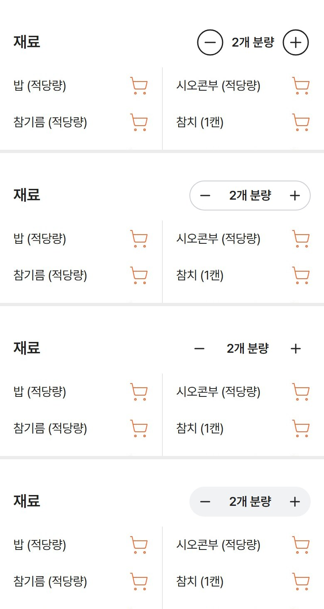
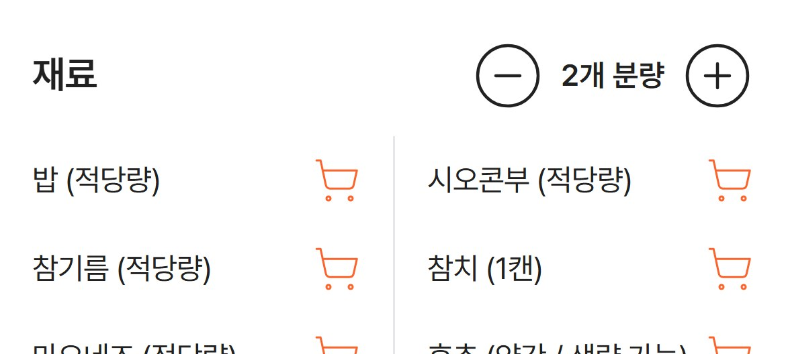

이 화면에서 동그라미로 감싼 아이콘은 분량 단추 둘뿐입니다. 동그라미 지름 30px이 제목 「재료」(19px)보다 커서, 제목보다 단추가 먼저 보입니다. 동그라미 둘을 흰 알약 하나로 묶고 안에 작은 − + 를 둡니다. 알약 모양은 가이드의 보조 버튼·태그에 이미 있는 모양이라 새 모양을 만들지 않습니다.
| 항목 | 지금 (개발 앱에서 잰 값) | 제안 |
|---|---|---|
| 모양 | 동그라미 두 개 (lucide circle-minus·circle-plus) · 지름 30px · 잉크 #212121 선 | 흰 알약 하나: 높이 36px · 둥글기 999px · 1px #CCCFD4 테두리 · 흰 바탕 (가이드 4.0절 2번 보조 버튼·14번 태그와 같은 테두리) |
| − + 아이콘 | 36px 그림 안에 그림 (선 굵기 stroke-width 1 → 화면 1.5px) | lucide minus·plus 18px · 선 1.5px (stroke-width 2) · 잉크 #212121 · 동그라미 없음 |
| 못 누를 때 (1일 때 −, 10일 때 +) | #ABABAB (가이드에 없는 회색) | #9E9E9E (가이드 2.4절 비활성 전용 색) |
| 누르는 영역 | 36×36px | 44×44px (− + 칸을 알약 밖으로 4px씩 투명하게 넓힘) |
| 글자 칸 폭 | 글자 길이 따라 바뀜 → 10이 되면 − 단추가 6.7px 왼쪽으로 밀림 | 72px 고정 · 가운데 정렬 (1~10 어느 숫자에서도 단추 자리 그대로) |
| 전체 크기 | 140×36px (10일 때 146.7px) | 146×36px (단추 칸 36 + 글자 72 + 36, 테두리 포함) · 오른쪽 끝 16px 여백 그대로 |
| 글자 | 15px · 600 · 잉크 「2개 분량」/「2인분」 | 그대로 (단위는 레시피 정보에서 옴) |
| 범위·동작 | 1~10 · 재료 양과 위 정보 줄이 함께 바뀜 | 그대로 |

네 가지를 같은 화면에 놓은 것. 위부터 지금 · 제안(흰 알약) · 다른 안 ① 동그라미만 빼기 · 다른 안 ② 회색 알약

개발 앱 지금 (레시피 941 시오콘부 참치마요 주먹밥). 동그라미 두 개가 제목 「재료」보다 크게 보입니다.
10개 분량으로 올렸을 때 위 정보 줄. 분량·칼로리가 같이 바뀝니다(그대로 둠).
바탕은 개발 앱 실제 화면에서 분량 단추 묶음만 가리고 1~10개 분량마다 찍은 것이고, 단추만 다시 그렸습니다. 「지금」 단추도 실측값(크기·선·색·간격 8px)대로 다시 그린 것입니다.